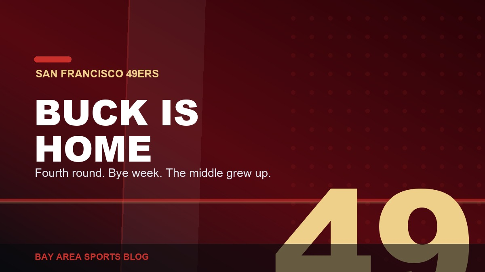
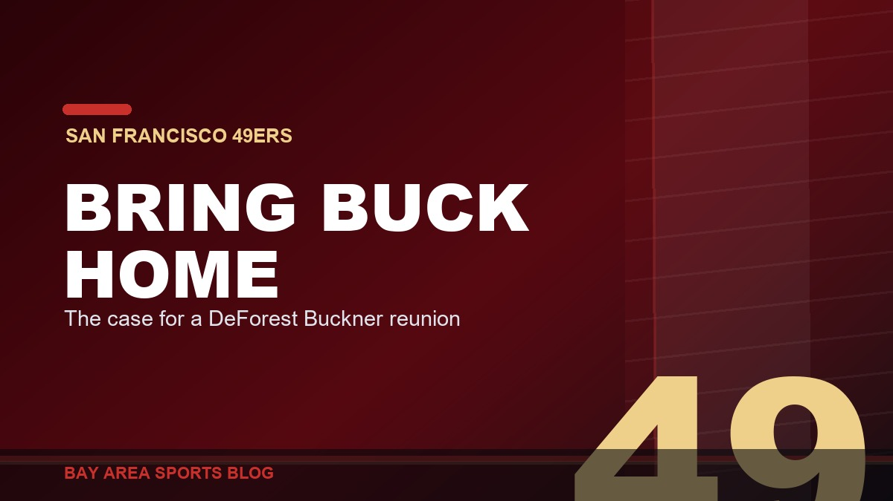
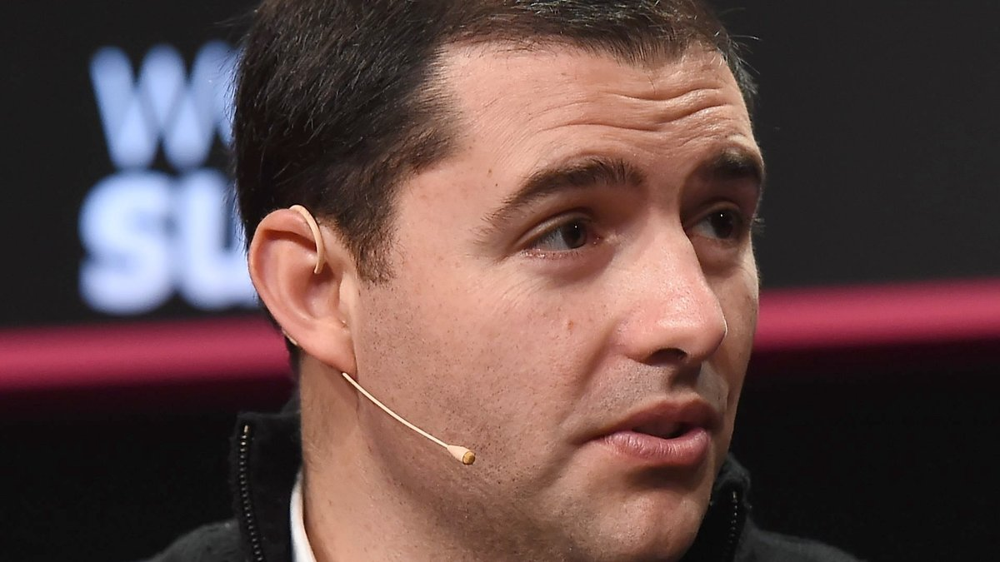
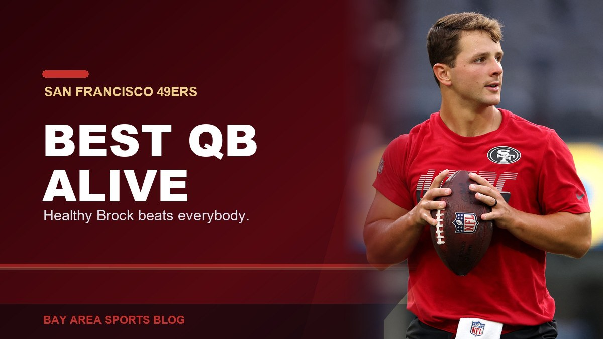
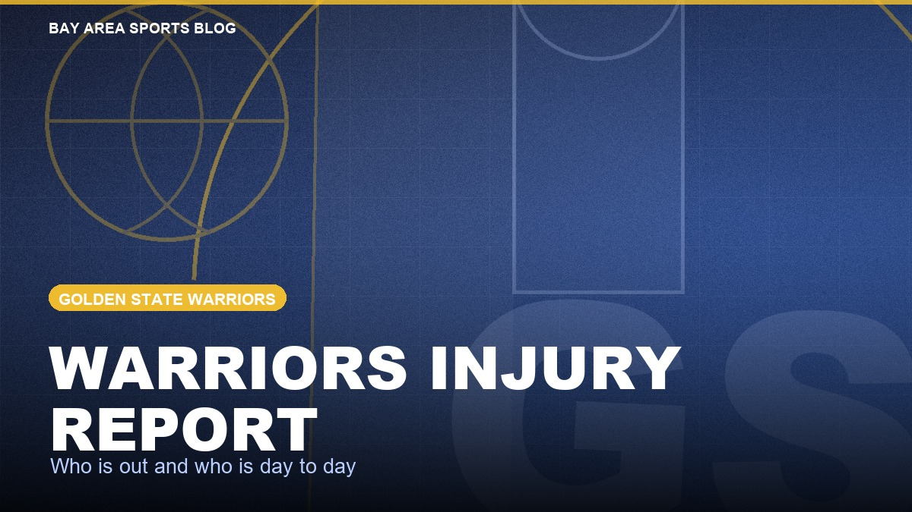
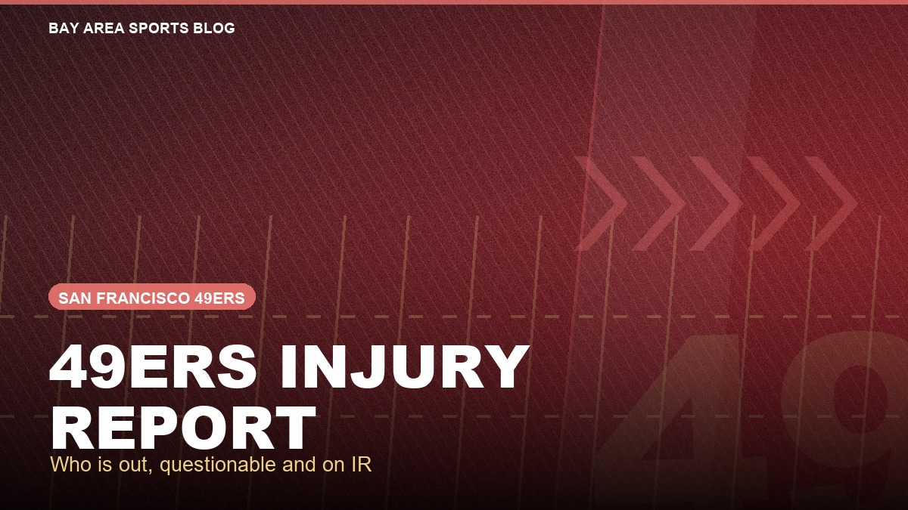
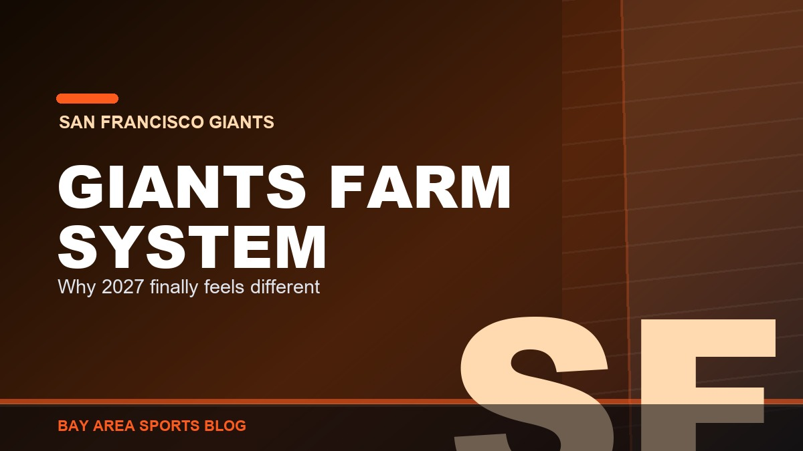
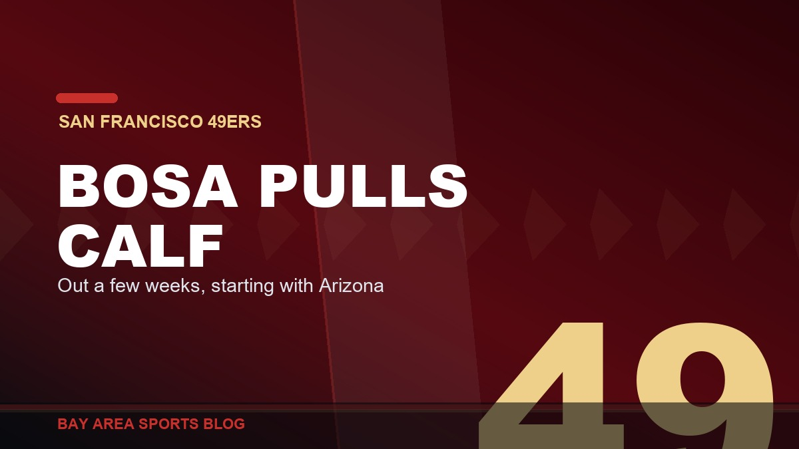
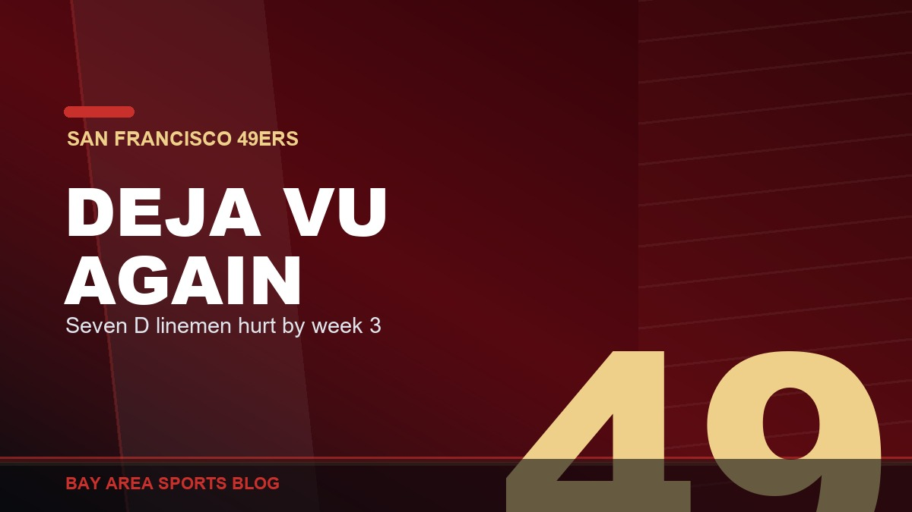

Latest Stories
Everything we have published, newest first. Opinion, recaps, history, and columns across every Bay Area team.

They Cut Jack Jones. DeForest Buckner Needed the Spot.
The 49ers released Jack Jones on Wednesday so DeForest Buckner has a roster spot. Seven games, a benching in Atlanta, and a corner room that just got thinner.

He's Home. DeForest Buckner Is a 49er Again, and the Front Just Changed.
The 49ers got DeForest Buckner back for a 2027 fourth. Four sacks, a bye week to install him, and the middle of this defensive line finally has a grown man.

0-3, and Yaxel Lendeborg Is Why I'm Still Smiling
The Warriors are 0-3 after the Lakers, Grizzlies and Suns. Yaxel Lendeborg is at 18.7 points, 8.3 rebounds and 4.3 assists, and the young guys are why I'm still smiling.

Oh and Two, and This Is What the Warriors Front Office Bought
Three star chases, zero trades, and a roster pinned under the second apron. The oh and two start is the bill for a summer that wasted another Curry year.

Malik Mustapha Is a Heat Seeking Missile. The League Should Learn His Name.
A fourth round pick from the Trey Lance trade, two ACL repairs, and back to back game saving plays. Malik Mustapha is the 49ers' poor man's Ronnie Lott.

Six and Oh, Barely. The '72 Dolphins Should Be Sweating.
The 49ers held off Washington 23 to 17 on Monday night to go 6 and 0. Purdy took the career passer rating crown, and the '72 Dolphins have company to worry about.

Bring DeForest Buckner Home. The 49ers Will Never Get a Better Shot.
The Colts fired their GM, Buckner is fed up at 2 and 4, and the 49ers have $41 million in cap space and a banged up defensive line. Go get Big Buck back.

Nick Bosa Is Out Monday Night. Juice and Evans Might Not Be.
The 49ers ruled Nick Bosa out for Monday night against Washington. Kyle Juszczyk has no tag, and Mike Evans is questionable with ribs and an Achilles.

Christian Kirk Finally Practiced, and Mike Evans Didn't
Christian Kirk practiced for the first time since July. Mike Evans sat with two broken ribs and a sore Achilles. Monday night at Levi's is next.

Jauan Jennings Trade Rumors: Bring Him Home, 49ers
Deebo's hamstring is gone, the receiver room is on IR, and Jauan Jennings has two catches in Minnesota. The 49ers trade rumors make too much sense to ignore.

Dre Greenlaw Suspended One Game for the Head Butt in Seattle
The NFL suspended Dre Greenlaw one game without pay for head butting Ernest Jones, so he misses Washington. A Niners fan on the appeal, Dugger and the pattern.

49ers 5 and 0 Through All the Injuries: Shanahan's Best Job Yet
Bosa out, the line gutted, the coach in a July car wreck, and the 49ers are 5 and 0. Only the 1999 Rams also beat three 12 win teams in a 5 and 0 start.

49ers Beat Seahawks 32 to 29 in Seattle and Go 5 and 0
Seven turnovers, a Greenlaw ejection, Deebo hurt and the 12th man screaming, and the 49ers still beat the champs 32 to 29 at Lumen Field. A Niners fan exhales.

49ers vs Seahawks Preview: Win in Seattle and the NFC West Is Ours
49ers vs Seahawks Week 5 preview from a Niners fan: 4 and 0, Purdy still unsacked, Bosa out, Seattle favored by 3, and why a win at Lumen Field puts us in control.

49ers Cut Matt Judon and Activate Mykel Williams for Seattle
The 49ers released Matt Judon and activated Mykel Williams off PUP. Number 98 plays Sunday at Seattle, his first game since the ACL. A Niners fan on why it matters.

Cowherd Calls Brock Purdy the Best QB Ever. Don't Jinx Seattle.
Colin Cowherd once picked the 49ers third in the West. Now he calls Brock Purdy the best quarterback ever, right before the passer rating record falls in Seattle.

John Lynch Deserves Credit for This 49ers Pass Rush
The guys who pressured Bo Nix came from a sixth round swap, a third round trade, a trade down and the practice squad. A Niners fan gives John Lynch his due.

Juszczyk Out 2 to 3 Weeks and It Hits Us Hard in Seattle
Kyle Juszczyk's knee sprain has him out two to three weeks, so the 49ers go to Seattle without the guy who makes all that backfield motion work. He'll be missed.

The 49ers Are the Team to Beat in the NFC, and It's Not Close
One penalty for 5 yards, zero sacks allowed in four games, one Purdy pick all year. Why Shanahan's 4 and 0 Niners are the team to beat in the NFC.

49ers 24, Broncos 14: Greenlaw Gets His Revenge and We're 4 and 0
49ers beat the Broncos 24 to 14 at Levi's to go 4 and 0. Greenlaw's 12 tackles against his old team, Kittle's dagger, zero sacks again, and Juszczyk's knee.

Mykel Williams Returns to Practice and the 49ers Defense Needs Him
Mykel Williams is back at 49ers practice off his torn ACL with Nick Bosa out. Why the 2025 first rounder matters against the run and the pass, starting Week 5.

Jed York Suspended Six Games and Fined $500,000 by the NFL
The NFL suspended 49ers owner Jed York six games and fined him $500,000 after his Ohio arrest. A Niners fan on why the punishment feels like a shrug.

Brock Purdy Is the Best Quarterback in the NFL. Check the Numbers.
Brock Purdy has the best career passer rating of any active QB and leads the league at 133.1. The Shanahan and weapons excuses are nonsense. A Niners fan's case.

49ers Offense: McCaffrey, Juszczyk and Watkins Keep the Points Coming
Half the 49ers receiver room is hurt and they still scored 98 points in three games. McCaffrey, Kyle Juszczyk and Jordan Watkins, from a Niners fan.

Warriors Injury Report: Who Is Out and Who Is Day to Day
The current Golden State Warriors injury report: every player ruled out or listed day to day, with the injury, the status and the latest update.

49ers vs Broncos Preview: Denver Is the Biggest Test Yet for Purdy
49ers vs Broncos Week 4 preview from a Niners fan: Bosa is out, Denver loves to blitz, and Purdy has not been sacked yet. Key matchups, injuries and a prediction.

49ers Injury Report: Who Is Out, Questionable and on IR
The current San Francisco 49ers injury report: every player listed out, doubtful, questionable, on injured reserve or PUP, with the injury and the latest update.

Brock Purdy Might Be the Best QB Ever, and the Stats Don't Lie
Brock Purdy's 133.1 rating and 9 TDs have fans changing their minds after three games. His 105.7 career rating says it's nothing new. Kyle and Kittle? Please.

Steph Signed Through 2029, and Now I Want One More Parade
Two years, $116 million, and about $20 million left on the table so the Warriors can build around him. Stephen Curry is staying home, and he just gave this team one more real shot.

Raiders 35, Saints 27: Three and Oh, and I Forgot What This Felt Like
Down 27 to 16 in New Orleans, the Raiders forced four fourth quarter turnovers and won 35 to 27. Cousins threw three, Bowers came back with 116 yards. 3-0.

49ers Signing Matthew Judon: Four Pro Bowls, Zero Sacks Last Year
The 49ers are signing Matthew Judon with Nick Bosa's calf and half the defensive line hurt. Four time Pro Bowler, 72 career sacks, zero in 2025. Help or washed?

49ers 36, Cardinals 30: Purdy Threw Four and We're 3 and 0
49ers 36, Cardinals 30 at Levi's. Purdy threw four touchdowns, a Kittle hold wiped out his long TD run, then Kittle caught the dagger a few plays later. 3-0.

Mike Krukow Is Retiring, and I Don't Know How to Say Goodbye
Thirty seven seasons in the Giants booth, three parades, a disease he never let beat him. Sunday is Kruk's last game, and we're losing a good one.

The Giants Were 65 and 95, and I've Never Been More Excited About Next Year
An A plus farm system, five top 100 prospects, Josuar Gonzalez hitting .351 at 18 and Bryce Eldridge already here. Why 2027 finally feels different.

Clemson 24, Cal 10, and Our Offense Never Found the End Zone
Our only touchdown came from the defense. Sagapolutele threw for 119, Clemson ran for 255, and a punt return broke a 10 to 10 tie at Memorial Stadium.

The A's Finished 64 and 98, the Kids Are Hurt, and I'm Still Checking the Box Score
Kurtz, Wilson, Rooker and Soderstrom ended 2026 on the injured list, De Vries had shoulder surgery, and the best young A's core in years is headed to Vegas.

Nick Bosa Injury: A Pulled Calf in Practice, and I'm Out of Patience
Nick Bosa pulled his calf in Thursday's practice and will miss a few weeks, starting with Arizona. Two ACLs, now this. His 49ers future is a real question.

49ers Defensive Line Injuries: Déjà Vu All Over Again, Every Year
Bosa, Collins, Okuayinonu, West, Thompson, Height, Mykel Williams. Seven 49ers defensive linemen hurt by week 3. When does this stop being bad luck?

Plus 42, Best Margin in the NFL, and I Spent Tuesday Counting Who's Out
The 49ers are plus 42 through two games, the best point differential in the NFL. Pearsall, Tonges, Collins, Stribling and Robinson are out. Arizona is Sunday.

They Signed the Kid from Stockton, and He's Turning 33 on the Practice Squad
Brandin Cooks, the Stockton receiver with 9,811 career yards, is joining the 49ers practice squad. The room is hurt. Arizona is Sunday at Levi's.